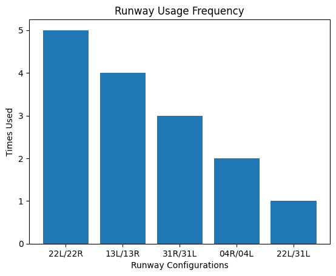

----------------------------------------- DURATION EXTREMES ----------------------------------------- MAX: SUN12 2350Z → TUE14 1345Z = 37:55 CFG: 22L/22R HOLD (DOM LOCK / STEADY FLOW) MIN: SUN12 0625Z → 1020Z = 03:55 (04R→13L FAST SWAP) TUE14 1345Z → 1830Z = 04:45 (13L→22L TRANS SHIFT) FRI17 0035Z → 0525Z = 04:50 (22L→31L REV FLOW) ----------------------------------------- PHASE FLOW STRUCTURE ----------------------------------------- PH1 — INITIAL SWEEP (SUN12) 31R/31L → 04R/04L → 13L/13R → 22L/22R - HIGH VARIABILITY - FULL DIR CYCLE TEST - SYSTEM CALIBRATION MODE PH2 — STABILIZATION (TUE–THU) 13L/13R ↔ 22L/22R CORE LOOP + OCC 31R/31L RESET INSERTS - OSCILLATION CONTROL PHASE - PARTIAL FLOW LOCKING - REDUCED RWY DIVERSITY PH3 — CONSOLIDATION (FRI–SAT) 22L/22R DOMINANT + BRIEF REVERTS TO 31/04 - FINAL ROUTE SETTLING - END STATE LOCKING BEHAVIOR ----------------------------------------- RUNWAY FUNCTION MAP ----------------------------------------- 22L/22R = PRIMARY FLOW NODE / END STATE / HOLD CONFIG 13L/13R = TRANSITION BRIDGE / MID-CYCLE NODE 31R/31L = RESET VECTOR / RECONFIG ENTRY POINT 04R/04L = LOW PRIORITY BURST / SHORT TERM SWITCH ----------------------------------------- TREND ANALYSIS ----------------------------------------- HIGH VAR (SUN INIT) ↓ OSC STABILITY (MID CYCLE LOOPING) ↓ CONVERGENCE (FINAL DOM LOCK) FLOW DECAY PATTERN: MULTI-AXIS SWEEP → CONTROLLED OSC → SINGLE NODE LOCK ----------------------------------------- FINAL STATE SUMMARY ----------------------------------------- SYSTEM OUTPUT: 22L/22R = FINAL DOMINANT CONFIGURATION STATUS: STABLE LOCK / END OF CYCLEBack to Homepage